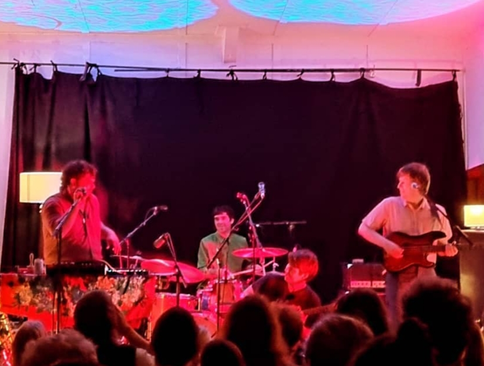

Evening
On Saturday the 5th of November 2022, I saw Hans Pucket perform at the Vogelmorn Hall located in Brooklyn, Wellington, NZ.

I had no prior knowledge of them aside from two songs a friend sent me during the week [Fuck my life, Comfort]. My friend described them as “Upbeat alt pop rock, idk…”. I wasn’t blown away upon my first shallow listen.
Recently, Hans Pucket released an album No Drama, this show is part of a national album release tour, followed by a tour of North America as support for The Beths.
Band lineup
Hans Pucket consists of brothers Oliver and Callum Devlin (twins), John Nott and Callum Passels. They hail from Wellington so are playing to a home crowd tonight which contains friends and family.
Oliver – guitar, (main) vox
Callum D – bass, vox
John – drums, guitar, vox
Callum P – keys, saxophone, guitar, vox, shaker, tambourine, more…...
Vogelmorn Hall
Vogelmorn Hall is essentially a lawn bowls club with a small performance hall (capacity 120) located in Brooklyn, Wellington. This is a residential suburb, and the venue is surrounded by houses, which is different to the usual town-strip location for Wellington music venues. Walking into the hall I felt I was back in cub-scouts earning badges and learning how to make bird-boxes from micro-density-fibre.
The venue became a tad hot and stuffy, a bit of airflow would’ve made a difference. Throughout the show vocals were slightly unclear, but sound overall was lucid and could be felt in one’s bones.
Beer at the venue was around $10 a can.
Performance
Starting off, songs were not as poppy as I expected. They followed a strum + sing pattern with very smartly placed and interesting accents added throughout (shaker, tambourine, etc). I heard influence from Crowded House, although I also felt songs lacked a climax. Bear in mind, this is early in the set where the band is warming up, getting an idea of the atmosphere, and shaking any butterflies.
The second half of the set took on a more energetic persona, songs were catchy, poppy and chic. Hans Pucket had found their mojo and communicated well with the crowd, establishing a groovy atmosphere for the audience to vibe within. They performed with flair; it’s clear band members are in-sync with one another.
Thoughts
Overall I thought the event went well! - The band put on a good performance, the venue was interesting and I left knowing I would see them again.
Hans Pucket pulled off dazzling vocal harmonies showcasing their talent to perform as a single organism. One whole, as opposed to four parts. I’m not entirely sure how songs progressed in terms of their chronological history, but by the end of the night the audience was moving, and a sense of excitement could be felt in the present moment. Tunes performed were catchy and I found myself singing along even though I had no idea of the words.
I was particularly impressed with Callum Passels talent to jump between instruments. He has an amazing vision to accentuate sounds/dynamics, using an array of instruments, at precisely the right moment in a song. These instances add a flavourful spice to songs and I feel defines the groups sound-signature.
Hans Pucket are at the start of their career with an eventful future ahead. They are nurturing a sound that is uniquely theirs and will mark a stamp on the NZ music scene.
Final Rating
Band: 3/5 (good)
Venue: 2/5 (not bad)
Evening: 4/5 (really good)
Rating System
1 (bad); 2 (not bad); 3 (good); 4 (really good); 5 (amazing)